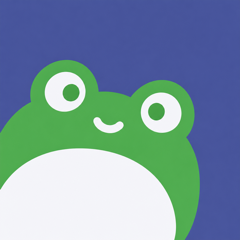
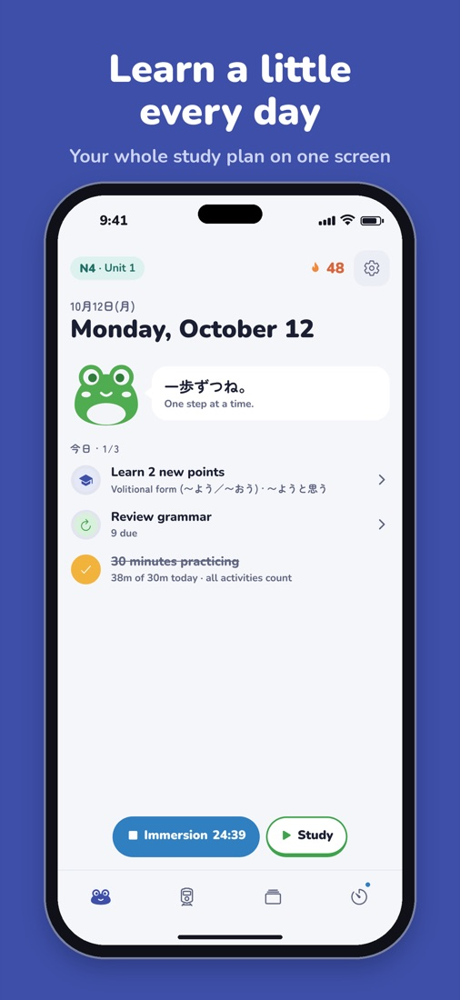
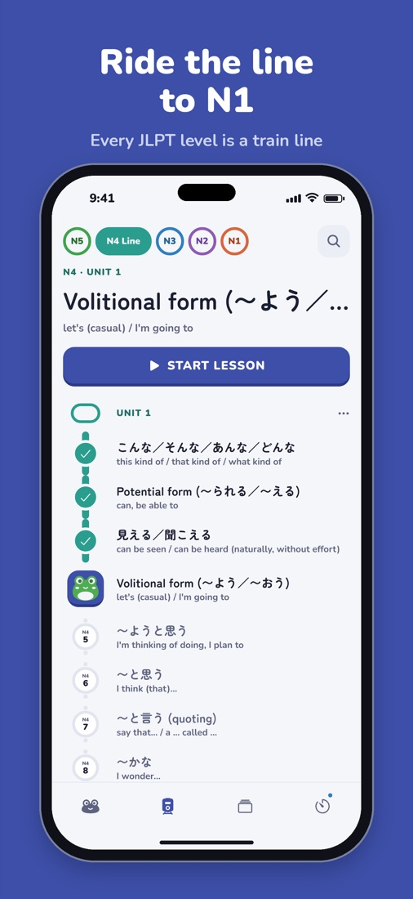

KaeruJLPT N5 → N1

The idea
Each JLPT level is a train line and each grammar point is a stop. The Today screen gives you one plan to work through: learn a couple of new points, review what’s due, do your Anki flashcards, then reach your immersion time goal. It works fully offline. Signing in is optional and only backs your progress up to the cloud.
What I built
- FSRS spaced-repetition scheduling over a local SQLite database, with migrations and versioned backups
- Cloud sync through Supabase (Apple, Google or email sign-in) that shares one format with the backup file
- Typed-answer reviews: romaji turns into kana as you type, and a correct but different answer gets “Close!” instead of a fail
- Anki .apkg import that renders your own decks, plus a built-in study timer
- Grammar content for N5–N1, checked by tests. The whole Jest suite runs in four time zones